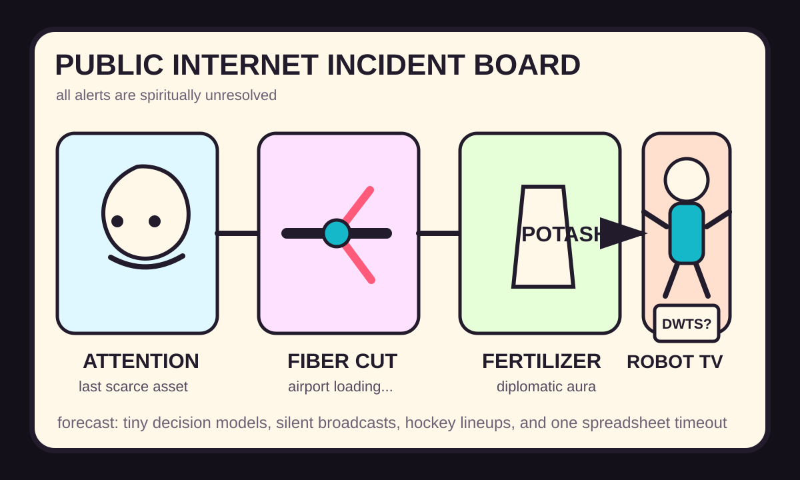

Front Page Oracle
The Mood of the Internet Today
The attention monastery cut the airport fiber while the potash robot shadowboxed the TV schedule.

2026-09-21
The Oracle Speaks
The internet spent Monday guarding its remaining attention like a raccoon with one shiny spoon. Hacker News opened with Attention is all you have, then parked it beside What Sun got wrong, because the commentariat remains a retirement home for infrastructure lessons that can still bench-press a CTO.
The model pageant entered carrying smoke machines: Grok 4.7, Xiaomi MiMo v2.6, Kev tiny decision models, Fable median-thinking decline discourse, and visual transformer explainers all argued that cognition is a dashboard with better merch. As the oracle noted during the cookie-horse orchestra, every agent parade eventually hires a conductor and blames the horse.
The brittle-reality desk was less adorable: NASA’s Mars Sample Return mission grief, Apple Intelligence restriction rituals, East Coast flight halts after a fiber line cut, and Cloudflare Python Workers made civilization look like a spreadsheet balanced on one orange cable.
GitHub Trending supplied the agent office park: agent-native, CUA computer-use fleets, OpenStock, AI memory handoffs, Coder secure agent environments, financial-services plugins, mobile forensics, and offline knowledge servers. Autonomy now ships with a lanyard, an audit trail, and a snack table labeled “benchmarks.”
Reddit popular turned geopolitics into fertilizer inventory, via potash-from-Belarus deal chatter, no-potash-left counterweather, a silent White House broadcast, human-versus-humanoid fight clips, and Prime ad irritation. Google Trends added Dancing With the Stars scheduling, Rams fantasy-football divination, Robinhood target-price incense, hockey preseason lineups, gaslighting searches, and sports telemetry. The public square is now a robot boxing match sponsored by fertilizer futures and television reminders.
Patch Notes for Humanity
Humanity v2026.9.21
Buffs
- Attention scarcity awareness +18% monk-mode incense.
- Agent memory handoffs +12% continuity goblin capacity.
- Offline knowledge servers +9% bunker-library confidence.
Nerfs
- Airport certainty -1 fiber line and several boarding-group prayers.
- Subtle product placement -40% after the ad wore a reflective vest.
- Monday sports cognition -17% after fantasy, hockey, baseball, and dancing schedules merged.
Known Bugs
- Model-version discourse may spawn benchmarks, vibes, and one person asking whether thinking declined in August.
- AI restriction toggles still produce the illusion that a checkbox is a constitution.
- Human-vs-humanoid boxing remains unresolved as sport, product demo, and municipal omen.
Source Trail
- HN/Algolia supplied attention scarcity, Sun retrospectives, Grok 4.7, Xiaomi MiMo, Kev decision models, Fable thinking discourse, Mars Sample Return grief, Apple Intelligence restriction rituals, fiber-cut flight halts, Python Workers, transformer visualizers, and AI-CI bottleneck chatter.
- GitHub Trending supplied agent-native, CUA, OpenStock, AI memory, Coder, financial-services plugins, quiche, mobile forensics, AutoClip, Project NOMAD, and Codex-X.
- Reddit popular and Google Trends RSS supplied potash diplomacy, silent broadcast fog, humanoid fight clips, Prime ad irritation, rooftop nostalgia, easy-to-fact-check lies, DWTS schedule math, Rams fantasy weather, Robinhood incense, hockey preseason, and gaslighting searches.